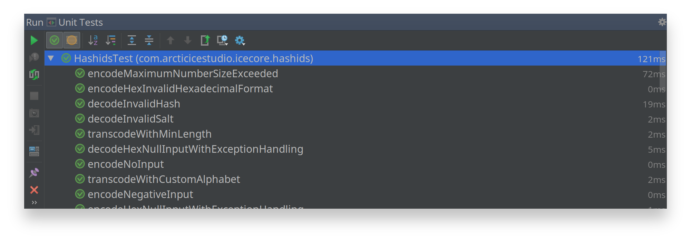
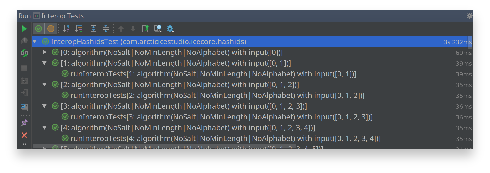

Testing
Please make sure to complete the requirement steps first in order to run the tests!
Continuous integration builds are running at Travis CI and Circle CI. The code coverage results are processed via Codecov.
To start all test types at once run
mvn clean test
Unit Tests
The unit tests are implemented using JUnit 4 and can either be run via Maven
mvn clean test -Dtest=HashidsTest
or by using the provided Unit Tests run/debug configuration from within IntelliJ IDEA.
The unit tests can also be run in debug mode by using the bug icon next to the run configuration name or from the menu via Run > Debug > Unit Tests.
The test runner tab will automatically toggle to show the test results.

Interoperability Tests
The interoperability tests ensure that the library provides the same results as the reference algorithm implementation hashids.js by using
- the Maven plugin frontend-maven-plugin to locally download NodeJS and install the required devDependencies via npm
- the Java 8 JavaScript engine Nashorn to execute the downloaded hashids.js script
and then comparing the results of both libraries.
The tests can either be run via Maven
mvn clean test -P node -Dtest=InteropHashidsTest
or by using the provided Interop Tests run/debug configuration from within IntelliJ IDEA.
The tests can also be run in debug mode by using the bug icon next to the run configuration name or from the menu via Run > Debug > Interop Tests.
The test runner tab will automatically toggle to show the test results.
